50 photos · 10 cities · photo 1 (outlined) is the mosaic's large photo · generated 2026-11-07
Penang (George Town) penang
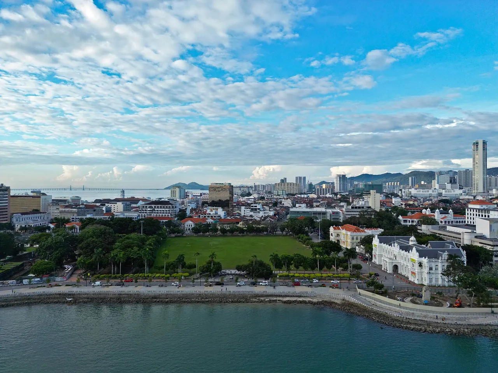
1. The Esplanade and George Town's waterfront, with a bridge to the mainland on the horizonAlt: An aerial view of a seafront promenade and a large green field lined with palms, a white colonial-style building with a dome, and the city's low rooftops and towers rising to green hills, with a long bridge on the horizonHundenvonPenang · CC BY-SA 4.0 · Commons · 1280×960 · focus 50% 72%
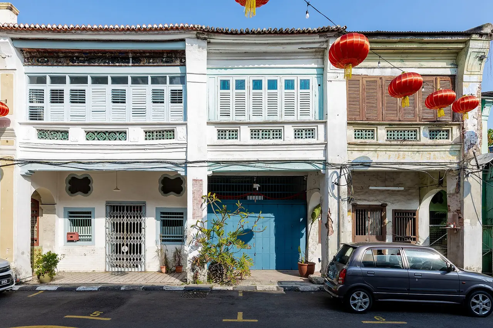
2. Shophouses on Armenian Street in George Town's heritage coreAlt: A row of three two-storey shophouses, two with white and blue shutters and one with brown shutters, with red lanterns strung across the streetSupanut Arunoprayote · CC BY 4.0 · Commons · 1280×853 · focus 50% 45%
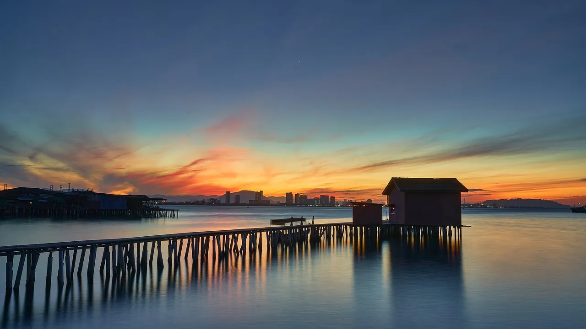
3. Dawn over the Tan Clan Jetty, a stilt village on George Town's waterfrontAlt: A wooden walkway on stilts leading to a small hut over calm water at dawn, with distant towers on the far shore under an orange skyChristopher Harriot · CC BY 2.0 · Commons · 1280×720
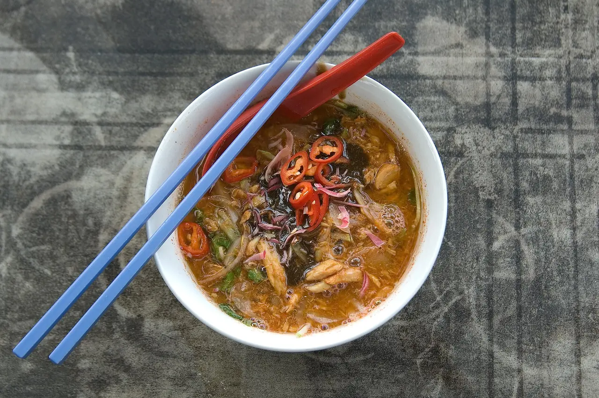
4. Asam laksa, one of Penang's signature hawker dishesAlt: A white bowl of noodle soup topped with sliced red chillies, with blue chopsticks and a red spoon resting across itJonathan Lin · CC BY-SA 2.0 · Commons · 1280×851
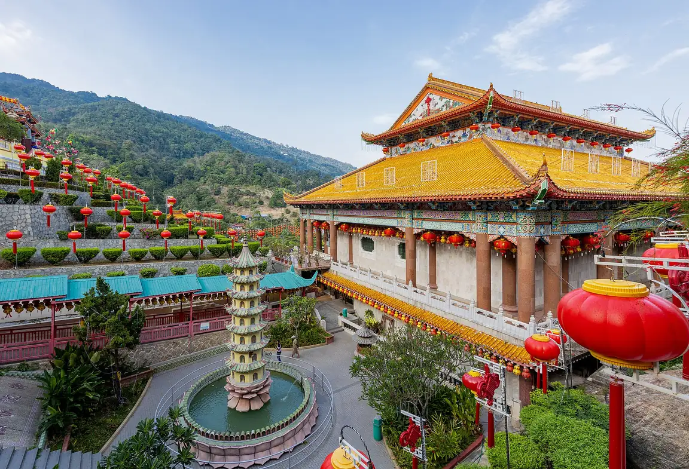
5. Kek Lok Si, the hillside Buddhist temple complex at Air ItamAlt: A temple hall with a golden tiled roof, a tiered pagoda fountain and rows of red lanterns on terraces below green hillsSupanut Arunoprayote · CC BY 4.0 · Commons · 1152×785
Langkawi langkawi
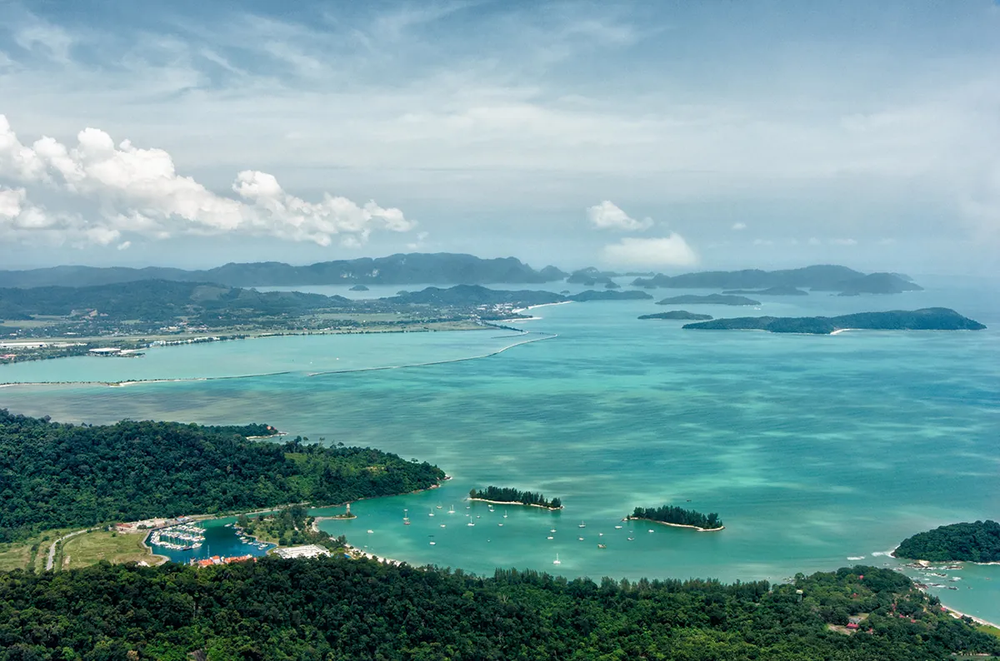
1. Turquoise bays and small islands off Langkawi, seen from a mountain topAlt: A high view over green forested headlands, a small yacht marina and a turquoise sea dotted with wooded islets under white cloudsJakub Michankow · CC BY 2.0 · Commons · 1200×794 · focus 50% 60%
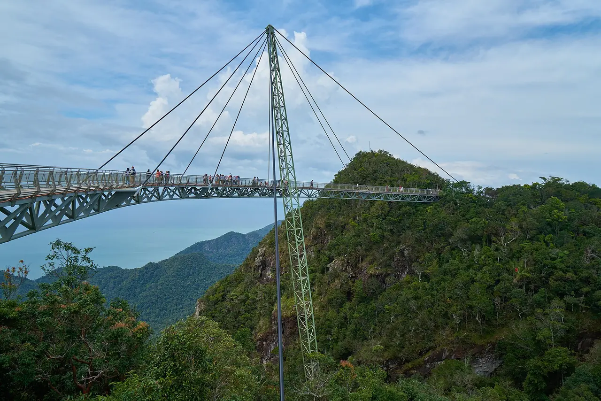
2. The Langkawi Sky Bridge, a curved walkway hung from a single pylon above the rainforestAlt: A curved steel footbridge with walkers, hung by cables from one tall green pylon over jungle-covered peaks, with the sea beyondEngin Akyurt · CC0 · Commons · 1280×854 · focus 45% 50%
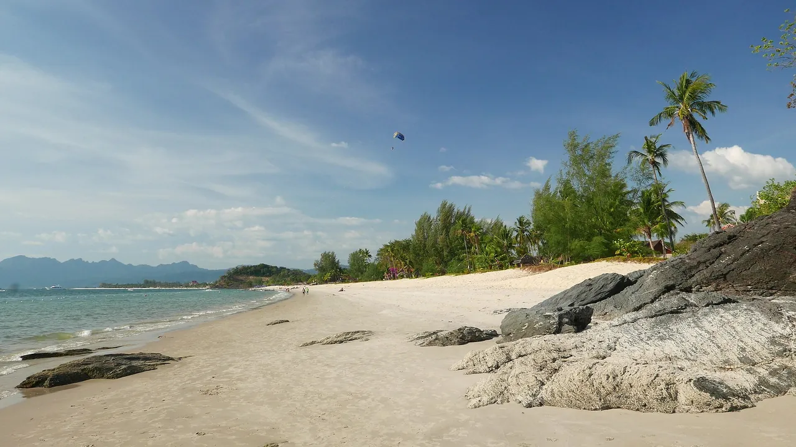
3. Pantai Cenang, the long sandy beach on Langkawi's west coastAlt: A wide pale sand beach with grey rocks, palm trees and calm turquoise water, with mountains on the far horizonNickLubushko · CC BY-SA 4.0 · Commons · 1280×720 · focus 40% 60%
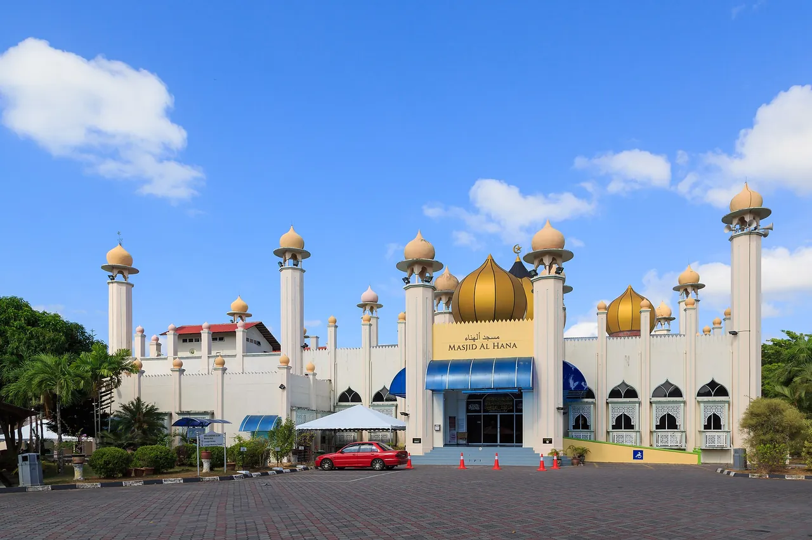
4. Masjid Al Hana, the town mosque of Kuah, Langkawi's main townAlt: A white mosque with golden domes and many slender minarets topped with onion domes, behind a paved forecourt under a blue skyCEphoto, Uwe Aranas · CC BY-SA 3.0 · Commons · 1280×853
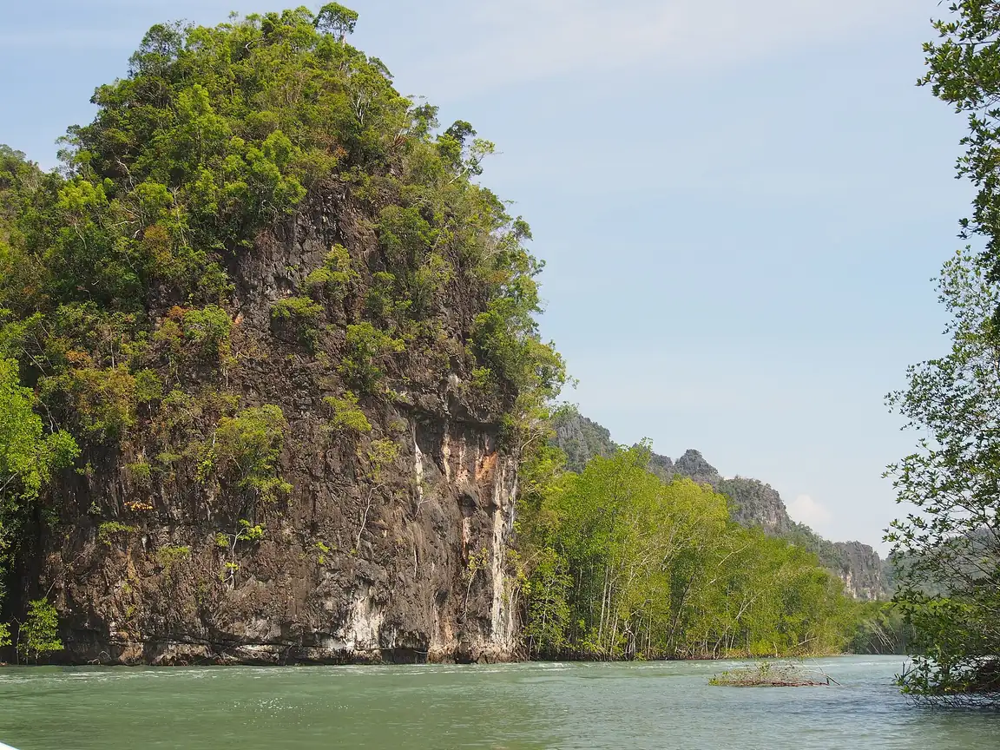
5. Limestone cliffs and mangroves along a river in Kilim Geoforest ParkAlt: A tall rock cliff covered in trees rising from green water, with a line of mangrove trees running into the distanceDcpeets · CC BY-SA 4.0 · Commons · 1152×864
Taipei taipei
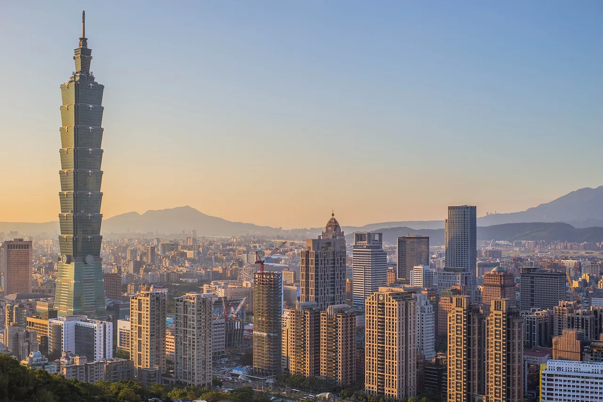
1. Taipei 101 and the city's skyline in late-afternoon light, seen from Elephant MountainAlt: A tall tiered green skyscraper beside clusters of tower blocks lit by warm low sun, with mountains on the hazy horizonynes95 · CC BY-SA 2.0 · Commons · 1280×853 · focus 30% 60%
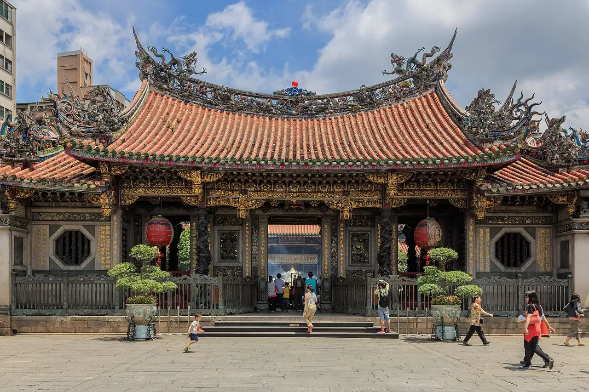
2. The entrance hall of Mengjia Longshan Temple in Taipei's Wanhua districtAlt: A temple front with a sweeping orange tiled roof crowded with dragon sculptures, carved stone columns and red lanterns over a paved courtyardCEphoto, Uwe Aranas · CC BY-SA 3.0 · Commons · 1280×853
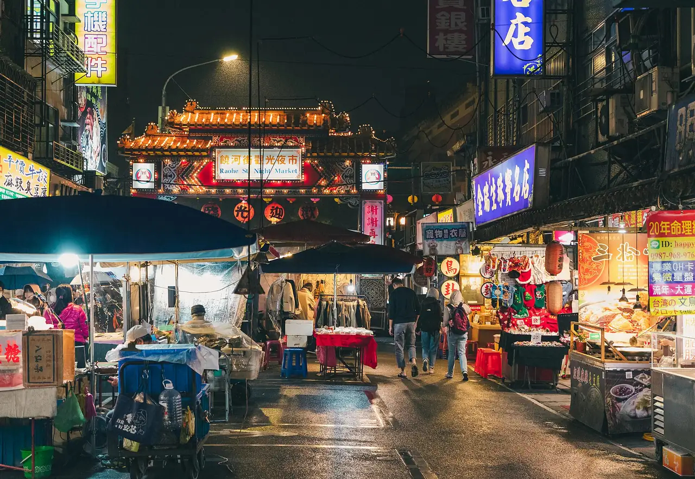
3. Raohe Street Night Market, entered through its lit-up gateAlt: A night street lined with food stalls, umbrellas and neon signs, leading to an ornate illuminated gateway with red lanternsJi Soo Song · CC BY 2.0 · Commons · 1280×884 · focus 50% 45%
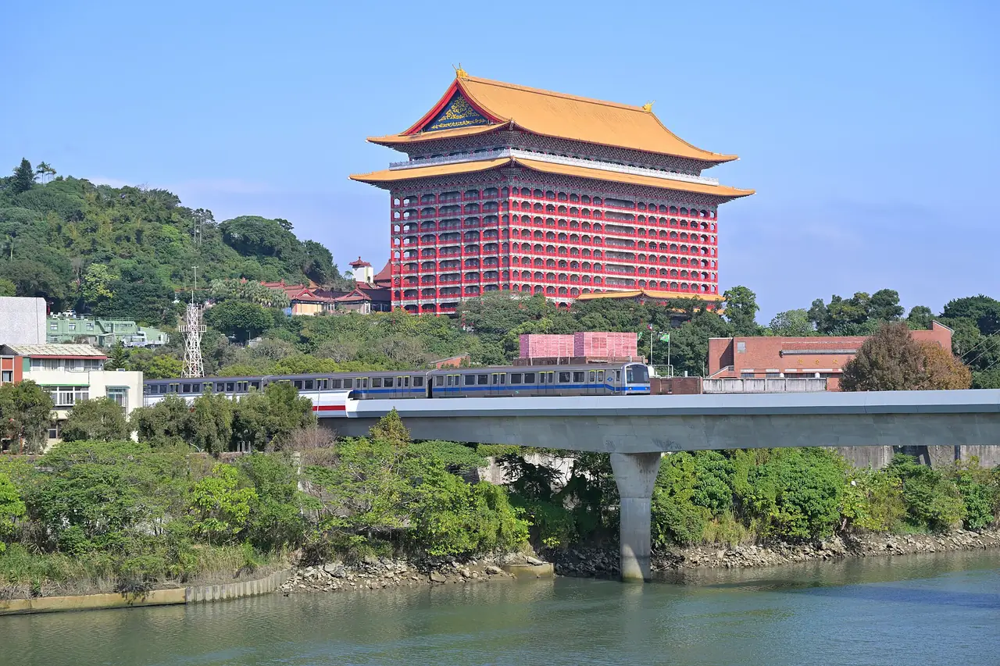
4. A Taipei Metro Red Line train crossing the Keelung River below the Grand HotelAlt: A silver metro train on a concrete bridge over a green river, with a large red palace-style hotel with a golden roof on a wooded hill behind4300streetcar · CC BY 4.0 · Commons · 1280×853
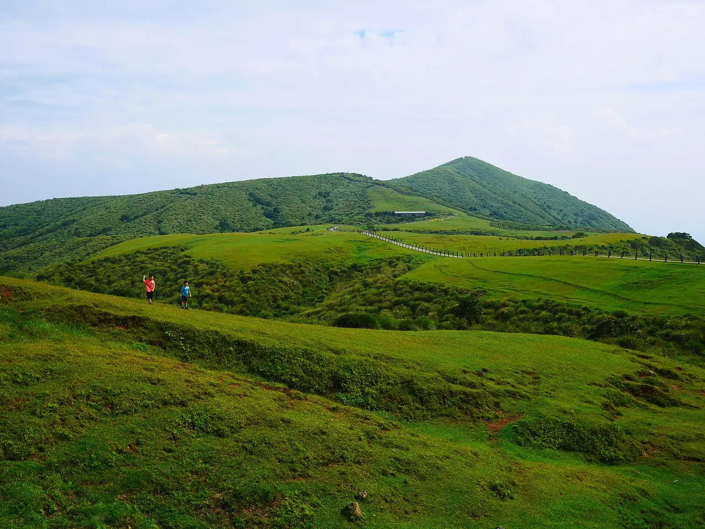
5. Qingtiangang grassland in Yangmingshan National Park, on the city's northern edgeAlt: Rolling green grassland with a fenced footpath leading towards a cone-shaped grassy hill, with two children walking in the foregroundThumbhero · CC BY-SA 4.0 · Commons · 1280×961 · focus 50% 60%
Bali (Denpasar / Canggu) bali
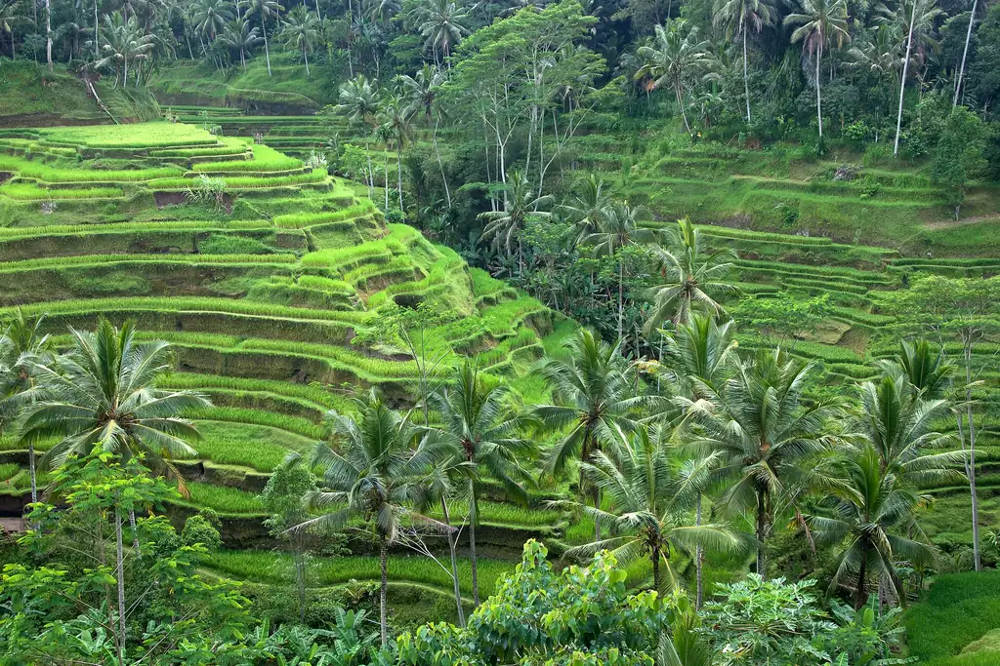
1. The Tegallalang rice terraces in the hills north of UbudAlt: Steep green rice terraces stepping down a hillside, framed by coconut palms and dense tropical forestVyacheslav Argenberg · CC BY 4.0 · Commons · 1024×683
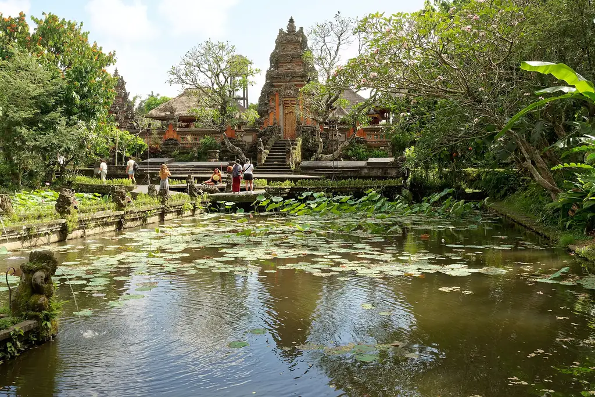
2. Pura Taman Saraswati, a water-garden temple in the centre of UbudAlt: A carved red-brick temple gateway behind a pond covered in lily pads, with frangipani trees and a few visitors on the stepsJakub Hałun · CC BY-SA 4.0 · Commons · 1024×684 · focus 50% 40%
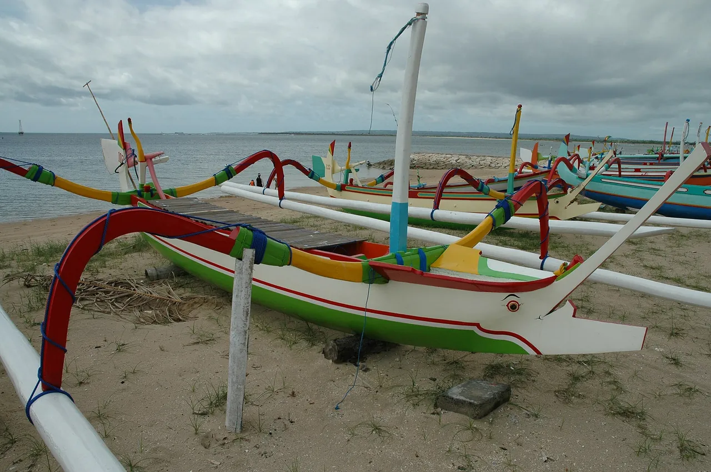
3. Traditional jukung outrigger boats drawn up on the beach at SanurAlt: Painted wooden outrigger fishing boats in white, green, red and yellow, with curved bamboo outriggers, resting on a sandy beach by calm water under a cloudy skyDajobimi · Public domain · Commons · 1280×851
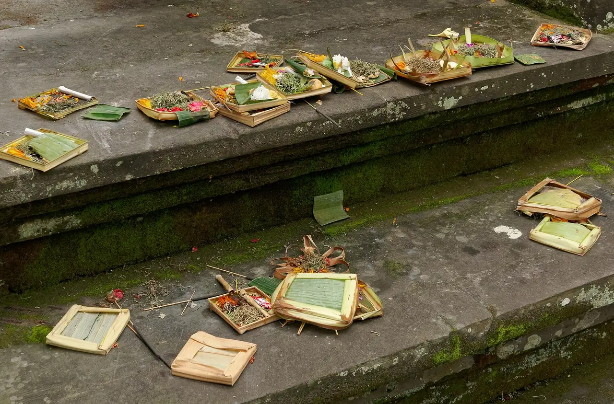
4. Daily canang sari offerings left on stone steps in UbudAlt: Small square palm-leaf trays holding flowers, leaves and incense sticks laid out on mossy grey stone stepsJakub Hałun · CC BY-SA 4.0 · Commons · 1280×843
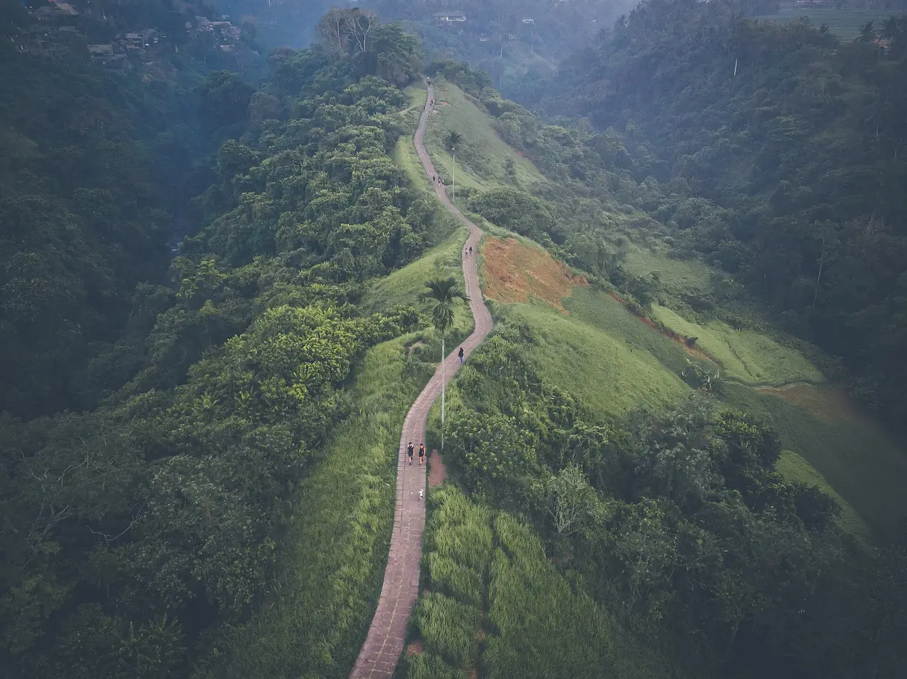
5. The Campuhan Ridge Walk, a paved path along a grassy ridge just outside UbudAlt: An aerial view of a narrow paved path winding along a green grassy ridge between two forested valleys, with a few walkersArtem Beliaikin · CC0 · Commons · 1280×959 · focus 50% 45%
Grand Baie grand-baie
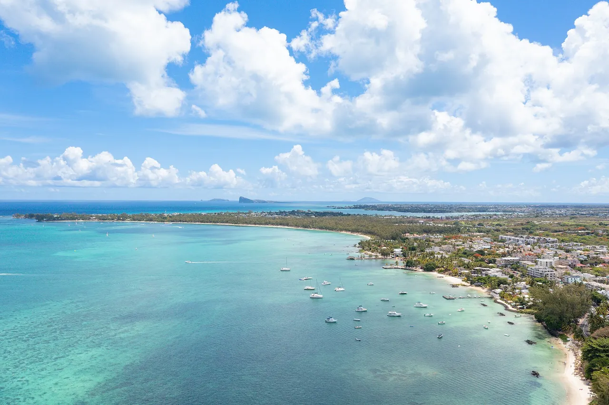
1. The lagoon and long beach between Mont Choisy and Trou-aux-Biches, just south-west of Grand BaieAlt: An aerial view of a wide turquoise lagoon with anchored boats, a long curving white beach backed by trees, and white houses along the shore, with small islands on the horizon"dronepicr" · CC BY 2.0 · Commons · 1280×853 · focus 55% 75%
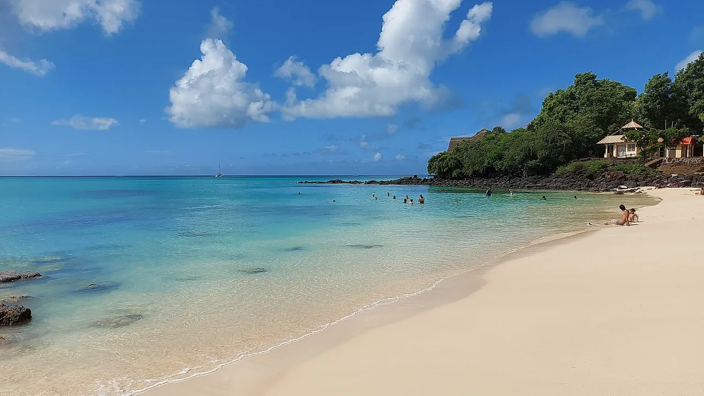
2. La Cuvette, a public beach a short walk north of Grand Baie's centreAlt: A white sand beach curving round clear turquoise water, with a few swimmers, dark rocks and a wooded headland with a small pavilionZoschH · CC BY-SA 4.0 · Commons · 1280×720
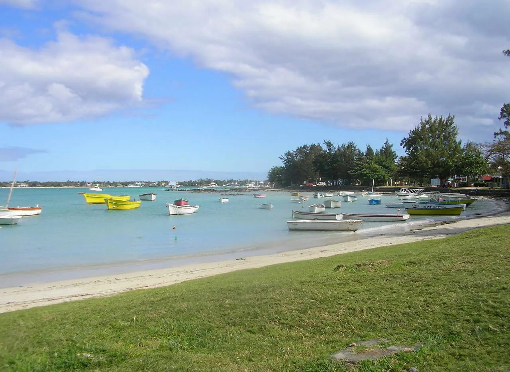
3. Fishing and pleasure boats moored in the shallow bay at Grand BaieAlt: Small white, yellow and red boats moored in clear turquoise water off a sandy shore, with a grassy bank in front and trees along the far sideNo machine-readable author provided. Maral10 assumed (based on copyright claims… · Public domain · Commons · 1280×934
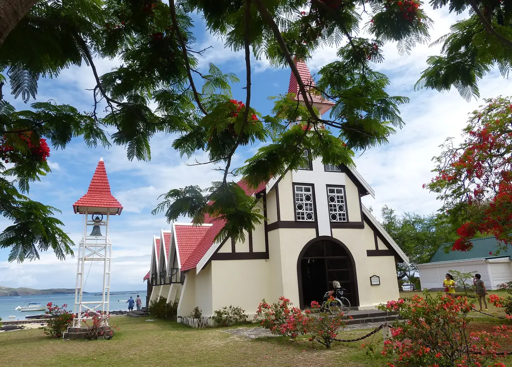
4. The red-roofed church of Notre-Dame Auxiliatrice at Cap Malheureux, on the island's northern tipAlt: A cream church with a steep red roof and a separate white bell tower under flame trees with red flowers, with the sea and an island behindgailhampshire · CC BY 2.0 · Commons · 1152×828
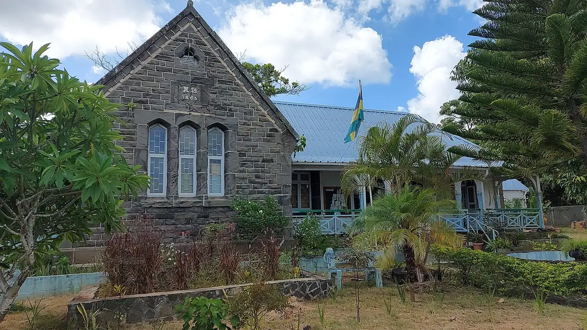
5. Grand Baie's public library, in a stone building inscribed 1865Alt: A grey stone building with a steep gable and three arched windows, joined to a veranda house with a blue metal roof and a flag, among palms and frangipaniZoschH · CC BY-SA 4.0 · Commons · 1152×648
Chiang Mai chiang-mai
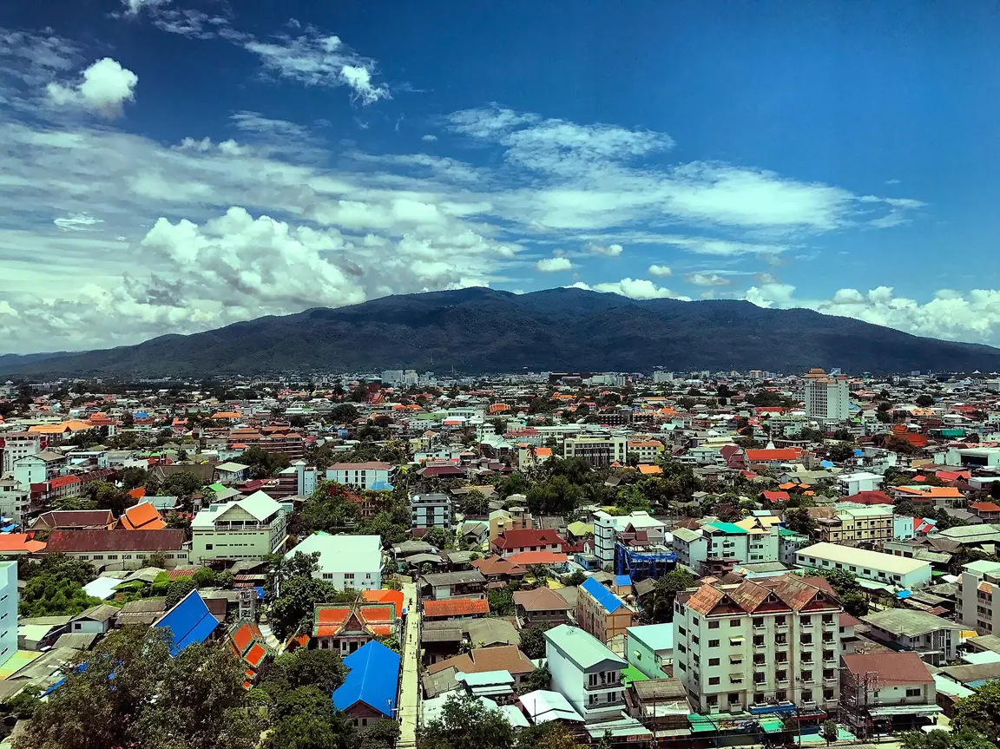
1. Chiang Mai's low-rise rooftops below Doi Suthep, the forested mountain west of the cityAlt: A wide view over a city of low white and orange-roofed buildings, with a long dark green mountain under a blue sky with white cloudsBlowing Puffer Fish · CC BY 2.0 · Commons · 1152×863
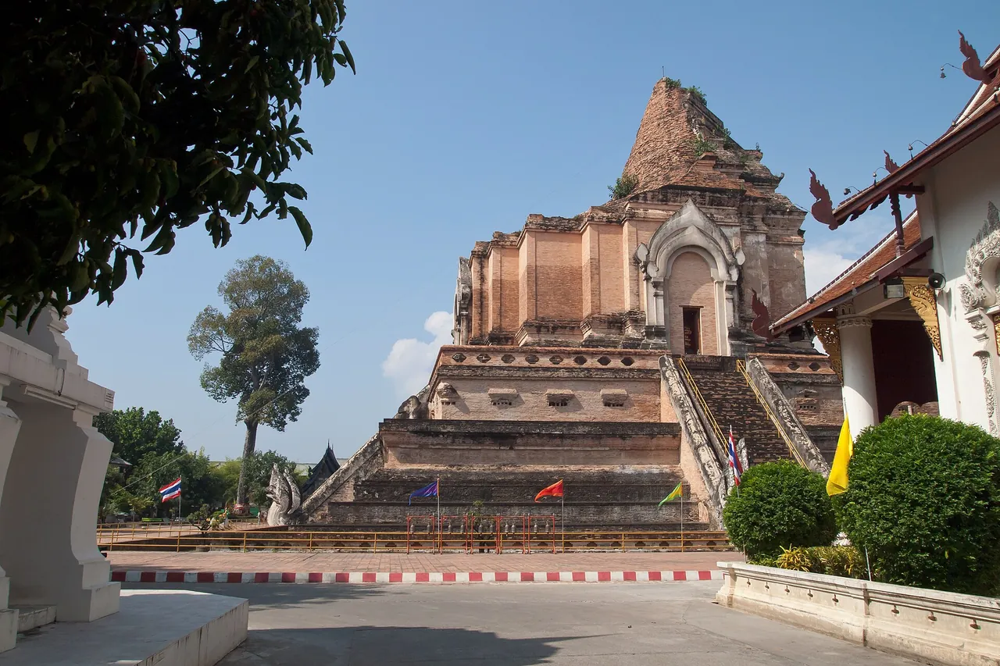
2. The great brick stupa of Wat Chedi Luang, a temple in the historic centre of Chiang MaiAlt: A huge weathered brick stupa with a broken top and a staircase flanked by serpent statues, with small flags along its base and a temple hall at the right, under a blue skyVyacheslav Argenberg · CC BY 4.0 · Commons · 1280×853
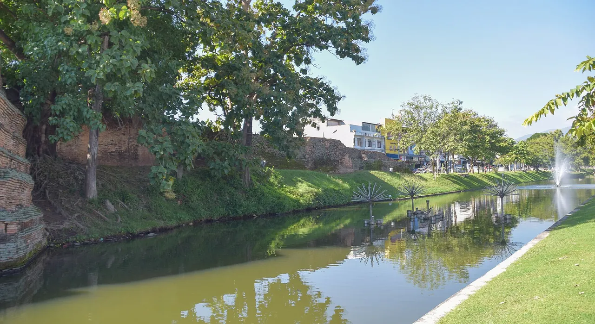
3. The old city's brick walls and moat, which ring Chiang Mai's historic centreAlt: A crumbling red-brick wall under large trees on a grassy bank beside a calm green moat with a fountainKrzysztof Golik · CC BY-SA 4.0 · Commons · 1280×700
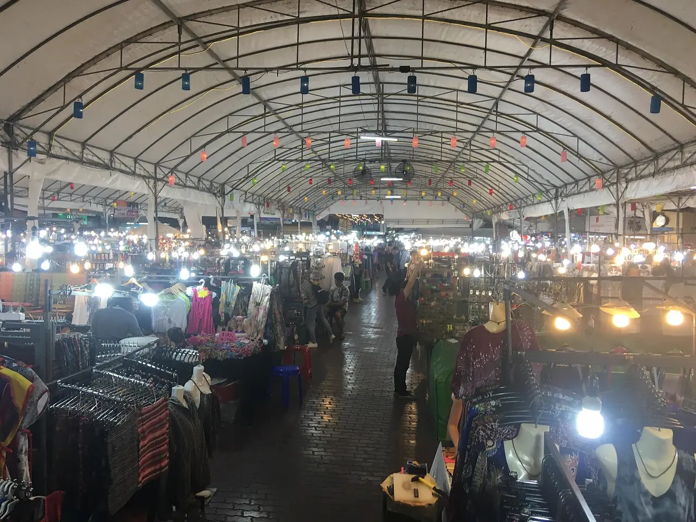
4. Clothing stalls under strings of lanterns at the Chiang Mai Night BazaarAlt: A long covered market aisle with clothes racks and stalls on both sides, lit by bulbs and coloured lanterns under a white canopyChristophe95 · CC BY-SA 4.0 · Commons · 1280×960
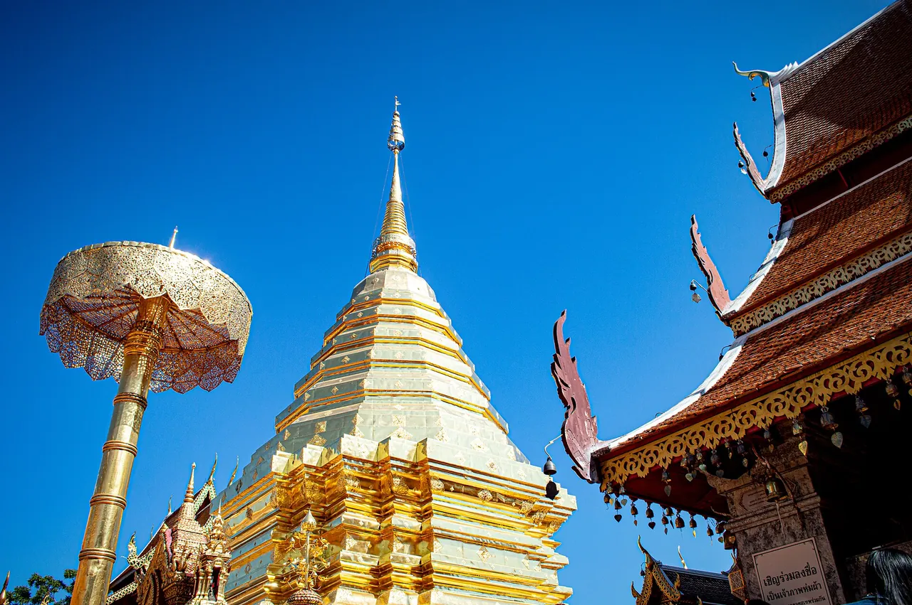
5. The golden chedi of Wat Phra That Doi Suthep, the temple on the mountain above the cityAlt: A gilded tiered chedi and a golden ceremonial umbrella beside an ornate temple roof, against a deep blue skyPhilip Nalangan · CC BY 4.0 · Commons · 1280×851
Chiang Rai chiang-rai
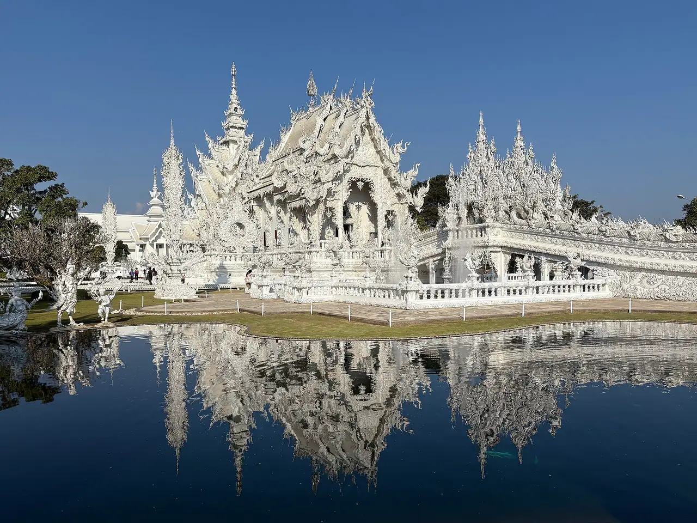
1. Wat Rong Khun, Chiang Rai's White Temple, reflected in its pondAlt: An ornate all-white temple with spiky spires and carved balustrades, mirrored in a still dark pond under a clear blue skyChainwit. · CC BY 4.0 · Commons · 1280×960
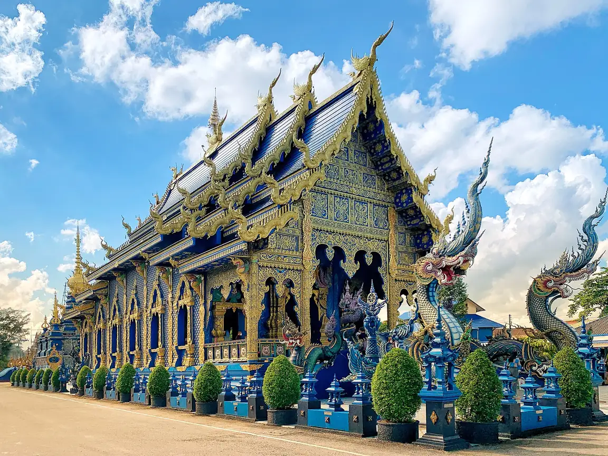
2. Wat Rong Suea Ten, the Blue Temple of Chiang RaiAlt: A long temple hall painted deep blue with gold carvings, guarded by two serpent statues and a row of potted shrubs, under white cloudsChainwit. · CC BY-SA 4.0 · Commons · 1152×864
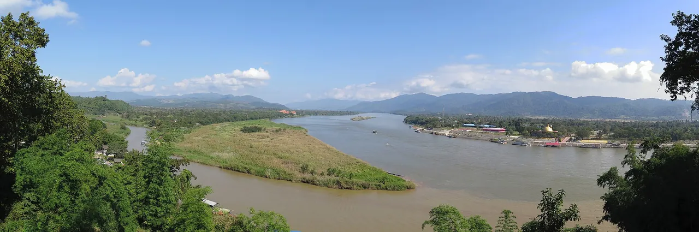
3. The Mekong at the Golden Triangle, where Thailand, Laos and Myanmar meet, in Chiang Rai provinceAlt: A wide river bending between green islands and forested hills, with a riverside town and a golden dome on the far right bankDouglas Perkins · CC BY 4.0 · Commons · 1280×425 · focus 75% 50%
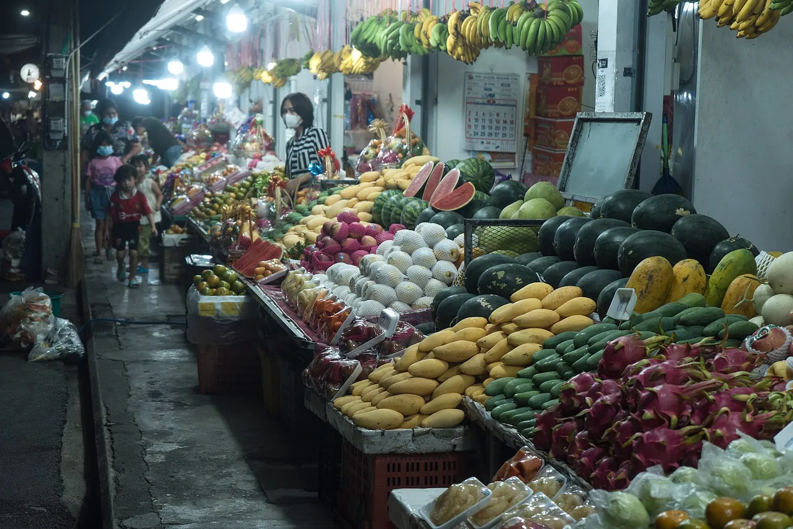
4. Fruit stalls at the Sirikorn market in Chiang RaiAlt: Stalls piled with watermelons, dragon fruit, melons, yellow fruit and hanging bananas along a lit market lane at nightAlexey Komarov · CC BY-SA 4.0 · Commons · 1280×855
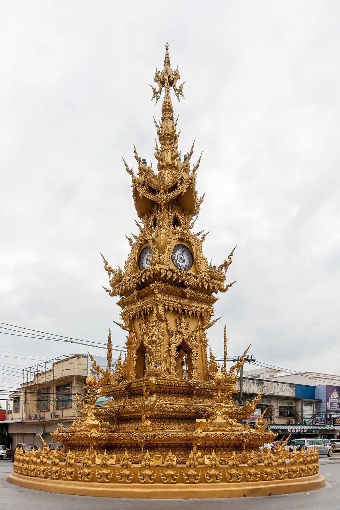
5. Chiang Rai's gilded clock tower, on a roundabout in townAlt: A tall golden clock tower covered in flame-like ornaments, standing on a round base at a road junction with low shops behindCEphoto, Uwe Aranas · CC BY-SA 3.0 · Commons · 853×1280 · focus 50% 60%
Bangkok bangkok
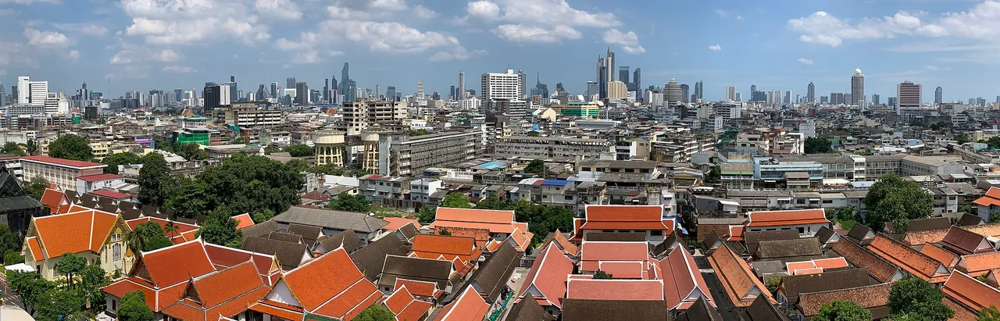
1. Bangkok's old-town temple roofs and the high-rise skyline, seen from the Golden MountainAlt: Orange-tiled temple roofs in the foreground, a dense spread of low and mid-rise buildings, and clusters of skyscrapers on the horizon under a blue sky with cloudsSergei Gussev · CC BY 2.0 · Commons · 1280×411 · focus 55% 50%
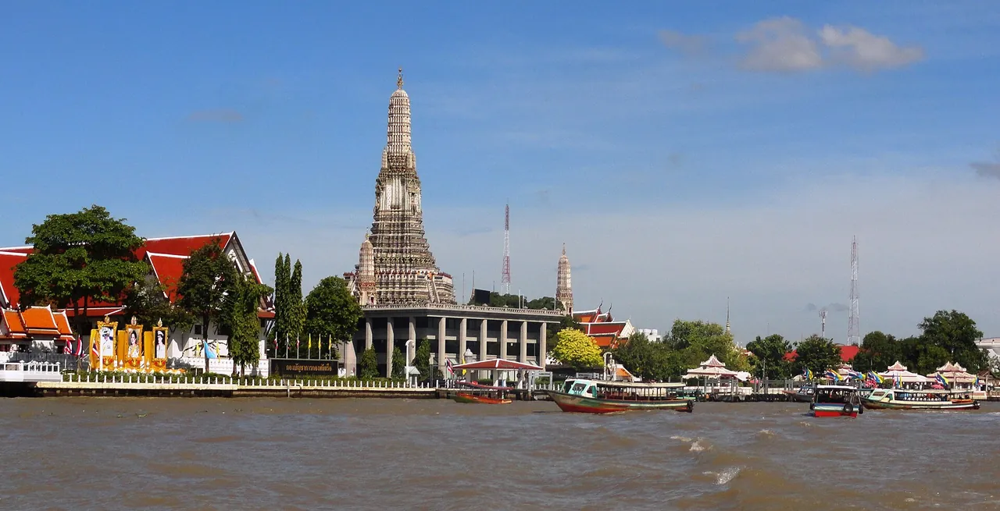
2. Wat Arun on the bank of the Chao Phraya, Bangkok's river, with passenger boats on the waterAlt: A tall pale temple spire rising behind a grey colonnaded riverside building, with red-roofed buildings and passenger boats on a brown river under a blue skyFabio Achilli · CC BY 2.0 · Commons · 1280×655 · focus 40% 50%
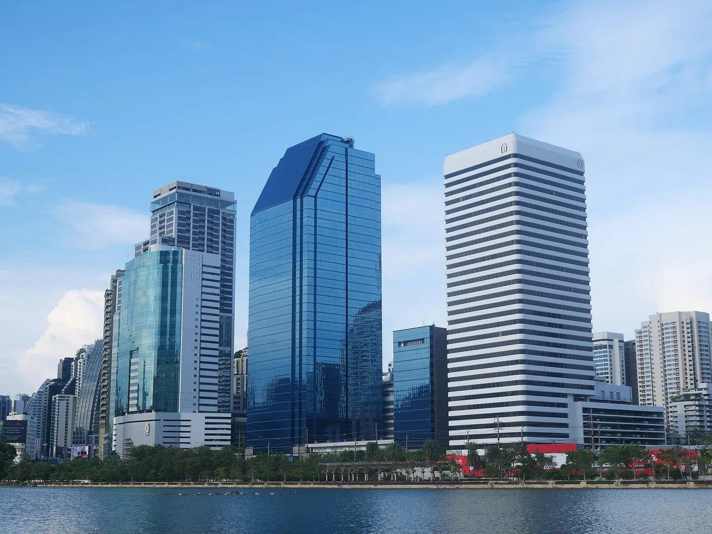
3. Office towers and condominiums above the lake in Benjakitti Park, central BangkokAlt: A row of glass and white-striped skyscrapers behind a line of trees on the far shore of a calm lake, under a bright blue skyArthur Taksin · CC BY 4.0 · Commons · 1280×960
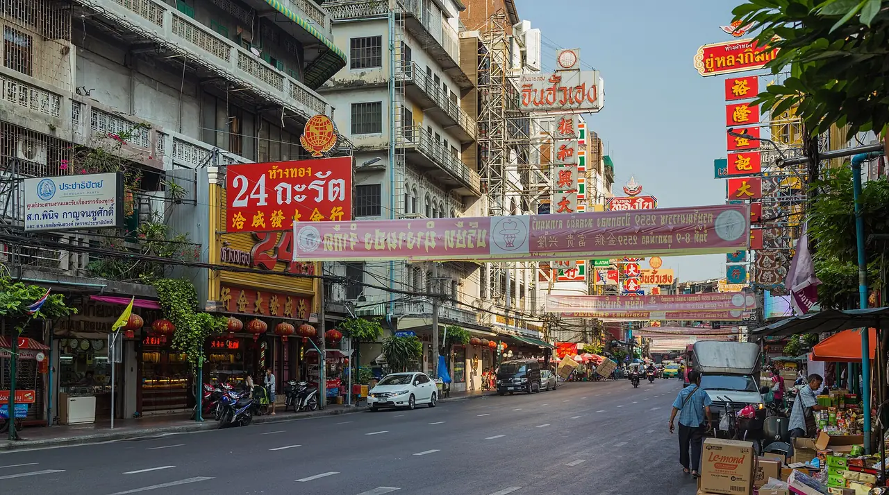
4. Yaowarat Road, the main street of Bangkok's ChinatownAlt: A wide street lined with old shophouses and tall red and white signs in Thai and Chinese, with a banner strung across and a few people and vehiclesMarcin Konsek · CC BY-SA 4.0 · Commons · 1280×714
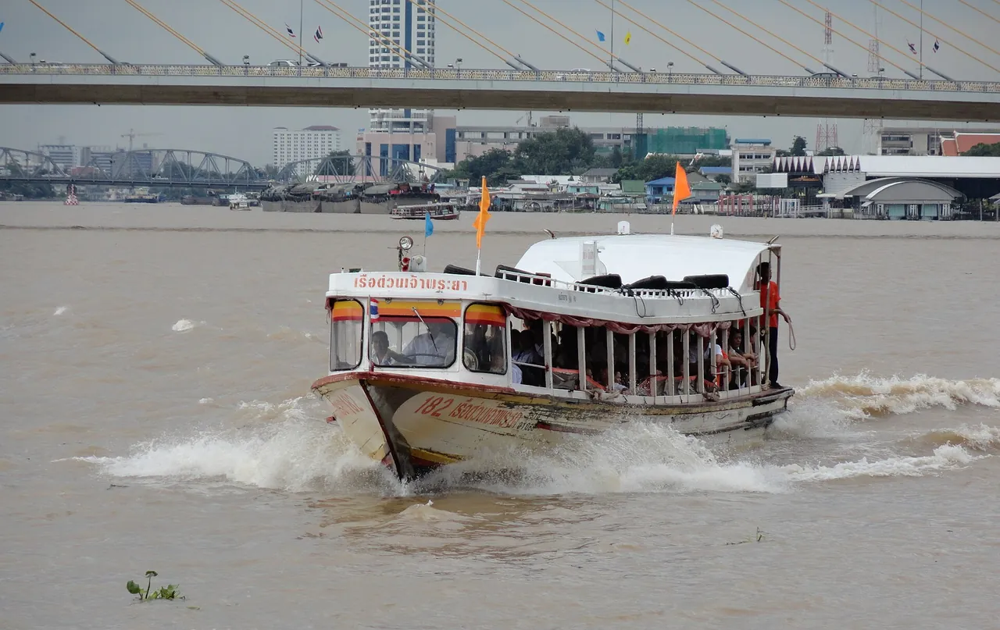
5. An orange-flag Chao Phraya Express boat coming in to Phra Arthit pier, one of the river buses on Bangkok's riverAlt: A white wooden passenger boat with an orange flag cutting through a brown river, with a cable-stayed bridge and riverside buildings behindFabio Achilli · CC BY 2.0 · Commons · 1280×807
Hua Hin hua-hin
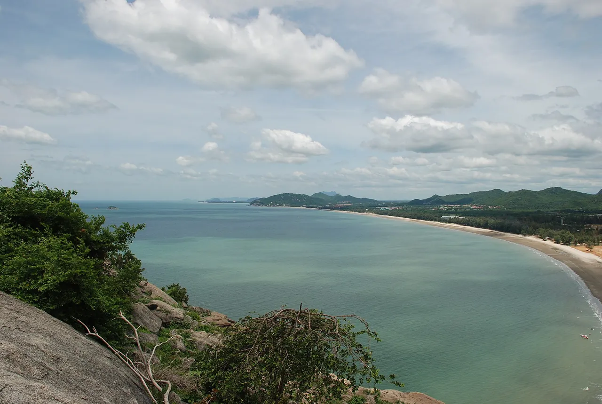
1. The long beach and bay below Khao Takiab, the hill at the south end of Hua HinAlt: A wide turquoise bay curving to a long pale beach lined with trees, with green hills on the horizon, seen from a rocky, bushy hilltop under white cloudsAll Fronts Quiet · CC BY-SA 3.0 · Commons · 1280×859 · focus 95% 50%
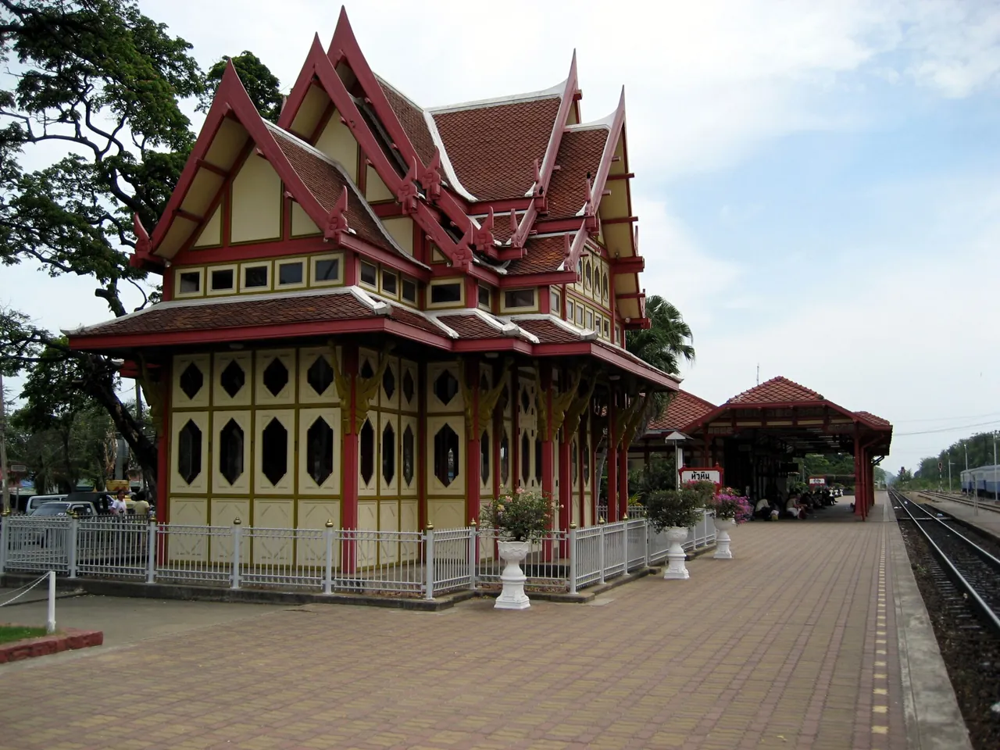
2. The royal waiting pavilion at Hua Hin's old railway stationAlt: A red and cream wooden pavilion with steep tiered roofs beside a brick platform, with a long covered platform and railway tracks behindKhaosaming · CC BY-SA 4.0 · Commons · 1280×960
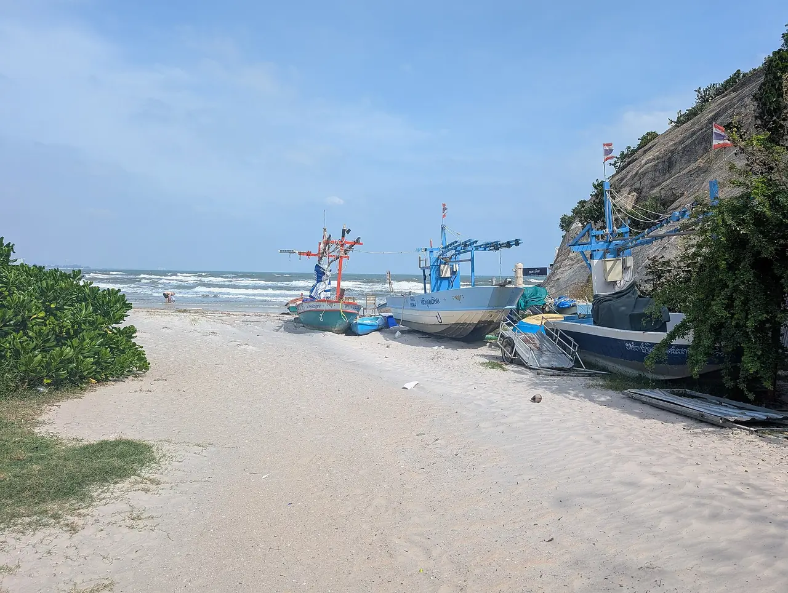
3. Fishing boats pulled up on the sand at Hua Hin beachAlt: Blue and white wooden fishing boats with tall rigging resting on pale sand beside a rocky outcrop, with waves breaking on the sea behindElmschrat · CC0 · Commons · 1280×964
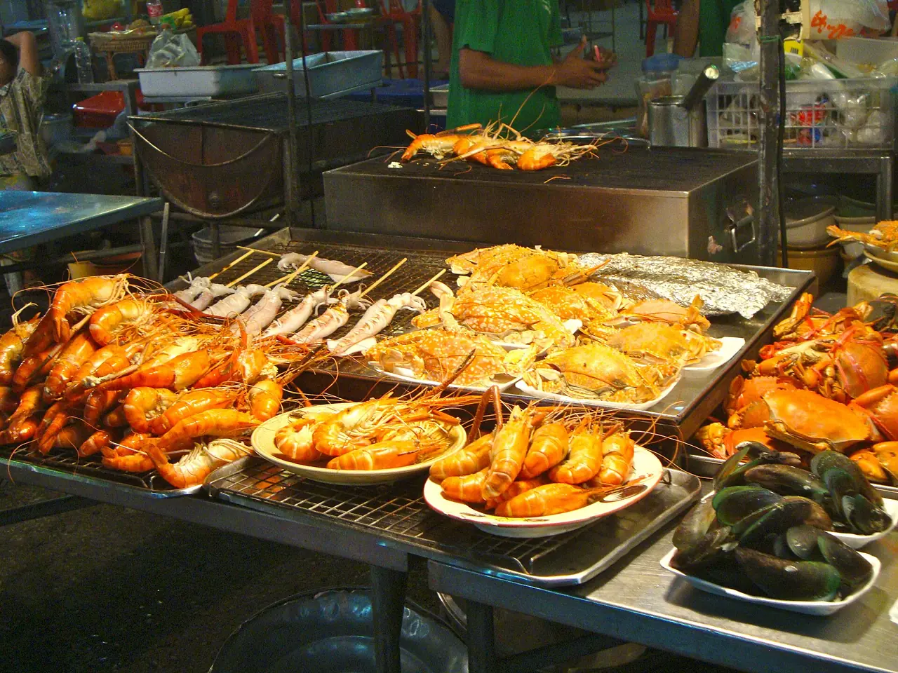
4. Grilled prawns, crabs, squid and mussels at a street-food stall in Hua HinAlt: Trays and plates of grilled orange prawns, crabs, skewered squid and green mussels laid out on a stall's grill in the eveningIan Gratton · CC BY 2.0 · Commons · 1280×960
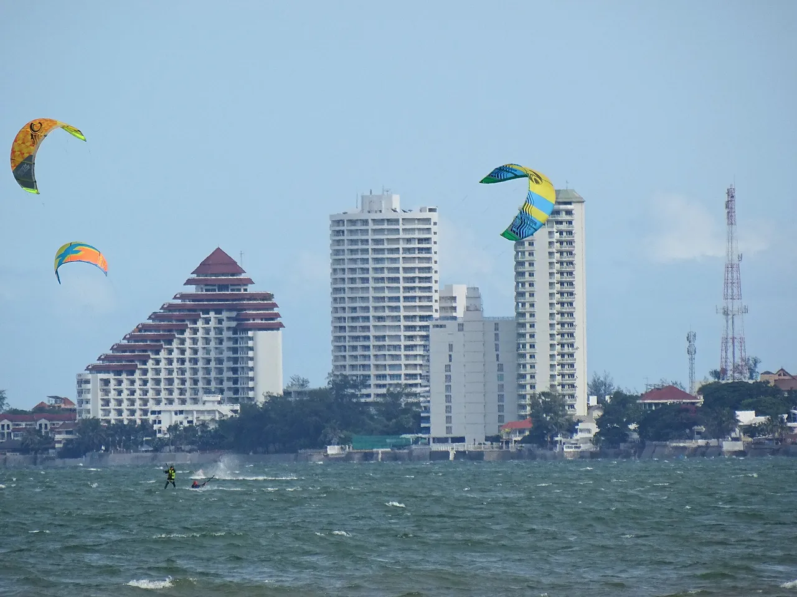
5. Kitesurfers off Hua Hin, with the town's hotel towers along the shoreAlt: Three colourful kites over a choppy green sea with two kitesurfers, in front of white high-rise hotels, a stepped pyramid-shaped hotel and trees on the shore under a pale blue skyAdam Jones · CC BY-SA 2.0 · Commons · 1280×960
Phuket phuket
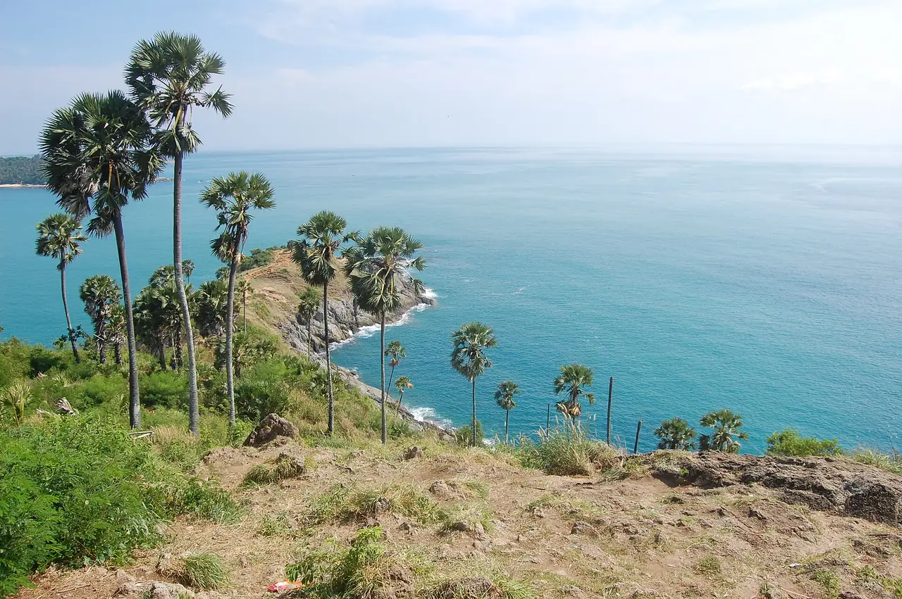
1. Promthep Cape, the palm-dotted headland at Phuket's southern tipAlt: Tall sugar palms on a grassy headland sloping down to a rocky point, above a wide turquoise sea under a pale skyedwin.11 · CC BY 2.0 · Commons · 1280×851
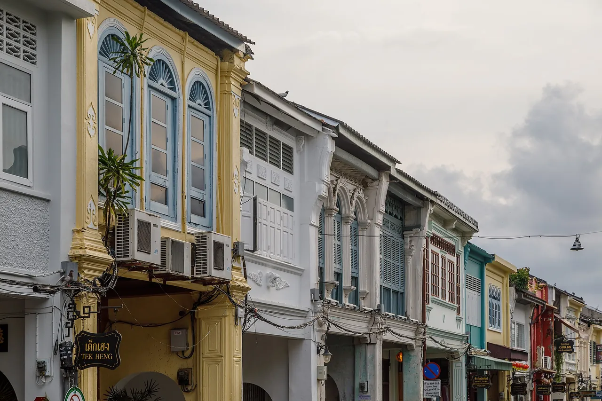
2. Sino-Portuguese shophouses on Thalang Road in Phuket Old TownAlt: A row of two-storey shophouses in yellow, white, pale blue and green, with arched shuttered windows and ornate plasterworkCEphoto, Uwe Aranas · CC BY-SA 4.0 · Commons · 1280×853
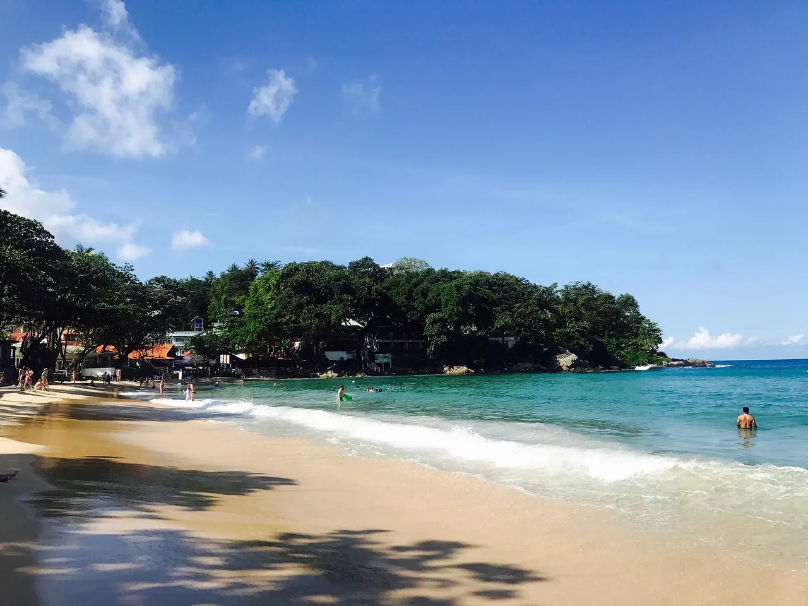
3. Kata Beach on Phuket's west coast, looking south to its wooded headlandAlt: A curving sandy beach in tree shade beside clear turquoise water with small waves, ending at a wooded headland under a bright blue skyHutheMeow · CC BY-SA 4.0 · Commons · 1280×960
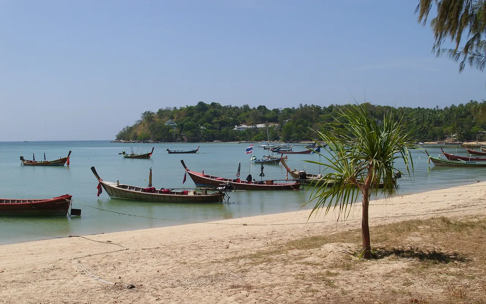
4. Long-tail boats moored off Rawai Beach in the south of PhuketAlt: Wooden long-tail boats with red and blue trim floating in calm shallow water off a sandy beach, with a small pandanus tree in the foreground and a wooded headland behindADwarf · Public domain · Commons · 1280×803
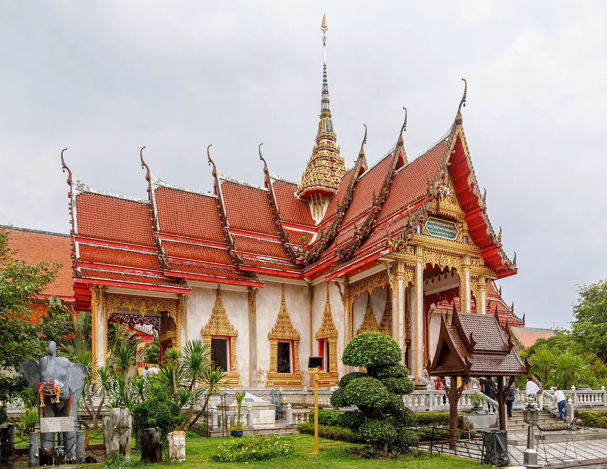
5. Wat Chalong, a Buddhist temple in the south of PhuketAlt: A white temple hall with layered red-tiled roofs, gold trim and a tall gilded spire, behind clipped shrubs and elephant statues, under a grey skyCEphoto, Uwe Aranas · CC BY-SA 4.0 · Commons · 1152×890

.jpg){kind=link}
.jpg){kind=link}

.jpg){kind=link}

.jpg){kind=link}


.jpg){kind=link}
.jpg){kind=link}


_-_img_11.jpg){kind=link}
_%E0%B8%A7%E0%B8%B1%E0%B8%94%E0%B8%A3%E0%B9%88%E0%B8%AD%E0%B8%87%E0%B9%80%E0%B8%AA%E0%B8%B7%E0%B8%AD%E0%B9%80%E0%B8%95%E0%B9%89%E0%B8%99_(October_2021)_-_img_01.jpg){kind=link}


.jpg){kind=link}

.jpg){kind=link}
.jpg){kind=link}


.jpg){kind=link}
.jpg){kind=link}
.jpg){kind=link}

.jpg){kind=link}